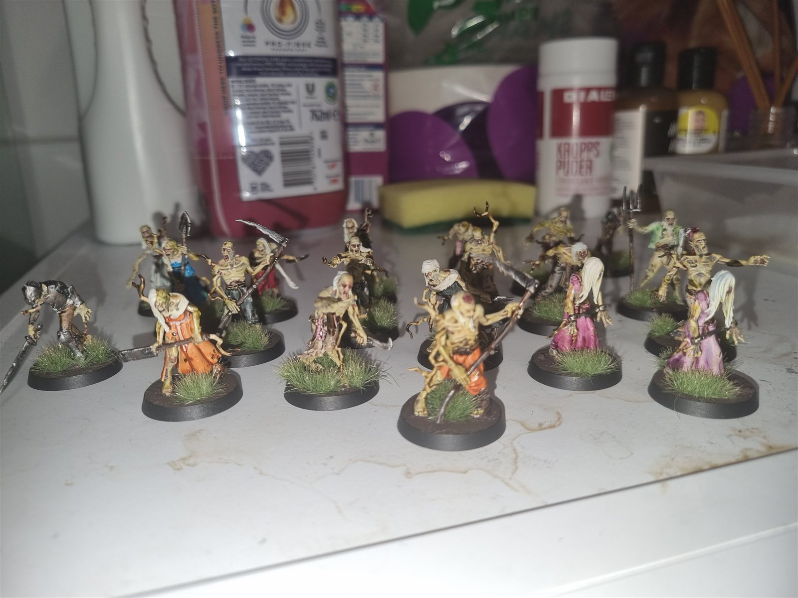
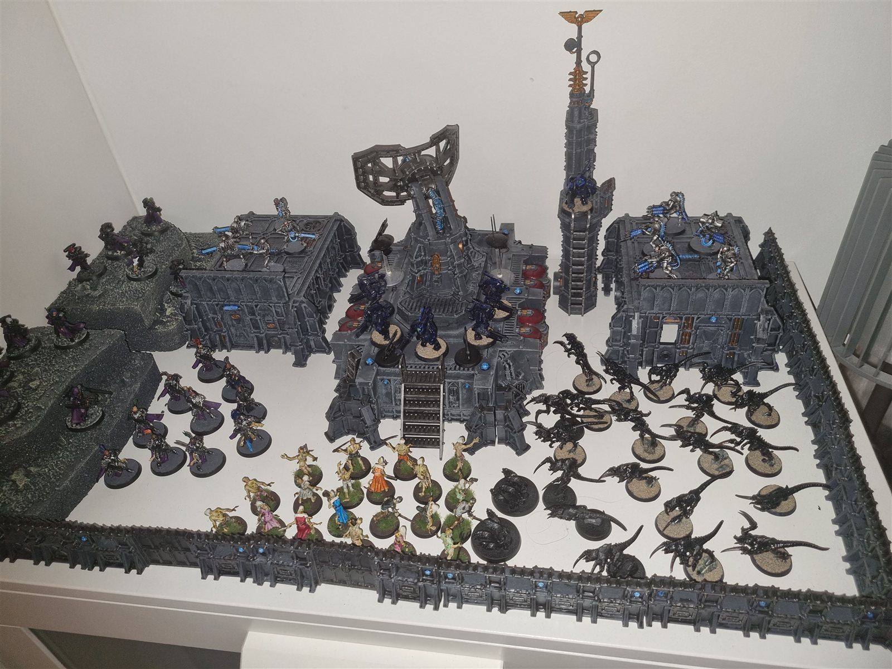

Deadwalker Zombies · Poxwalker proxies ·
My Last Horror-Themed Kill Team Joins the Fray!
My idea was to create three Kill Teams inspired by horror creatures I love. First came my Necrons, inspired by Terminator. Then came my Tyranids, inspired by the Xenomorphs. Finally, here are my Deadwalker Zombies, used as Poxwalker proxies — a Kill Team inspired by zombies!


The painting challenge
I painted the whole gang following Games Workshop’s Poxwalkers colour scheme. For an extra challenge, I used only primer, Contrast paints and Dry paints.
Meet the zombies
Explore each group below. Open the extra angles or select any photo for a full-size view.
Armoured Zombies

More angles (3)


Tree Zombies

More angles (3)


The Twins

More angles (3)


Stabby Sisters

More angles (3)


Rot Brothers

More angles (4)


Pretty Dress Sisters

More angles (3)


Scythe Brothers

More angles (3)


Walker Brothers

More angles (3)


Farming Brothers

More angles (2)


Something Smells Fishy Here!


Originally shared on TBD’s Hobby Corner.